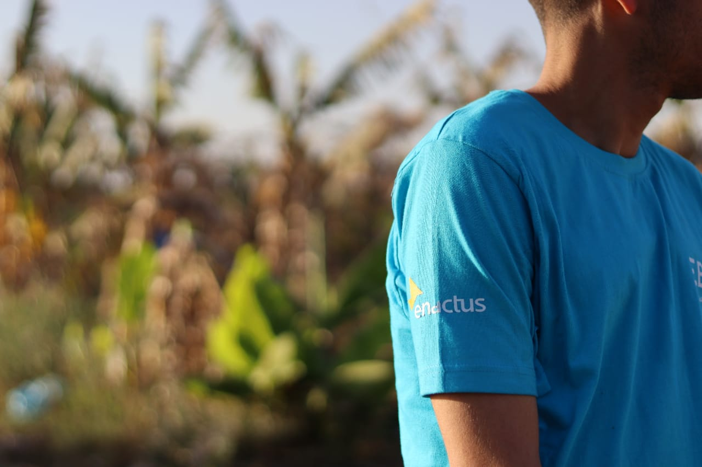

About


➤
We are focused on developing eco-friendly solutions for poultry
processing. We are replacing traditional
chemical rubber fingers with natural alternatives, which aim for a
healthier environment. Our natural solution
uses banana fibers to effectively remove poultry feathers,
ensuring the preservation of the skin and your
health.
➤
The environment needs innovative solutions, and we don't have
to rely on big companies. We tackled a simple, everyday issue on
poultry farms—feather plucking—by replacing elastic materials
with a natural, low-cost alternative: banana tree stems, which
are often discarded. This not only offers a sustainable solution
but also supports the Sufi school.